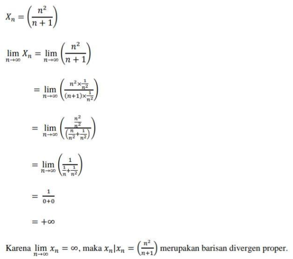
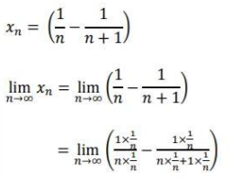
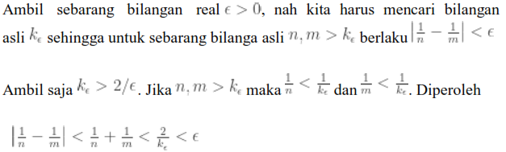
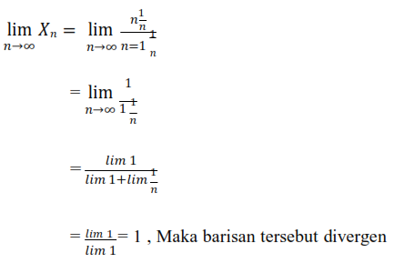
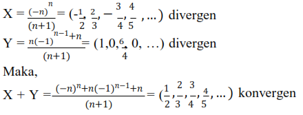
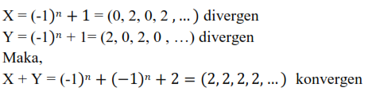
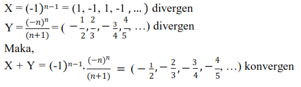
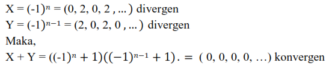
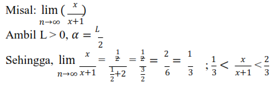

- Barisan Divergen & Teorema Cauchy -
Misal (xn) adalah barisan bilangan real. Barisan (xn) dikatakan barisan Cauchy jika dan hanya jika (xn) memenuhi: untuk ϵ>0, terdapat bilangan asli N sedemikian sehingga untuk tiap bilangan asli n,m dengan n, m ≥ N, berlaku bahwa: |xn − xm| < ε
Perhatikan bahwa notasi ∣ xn − xm∣ < ε menyatakan selisih dari suku-suku yang lebih dari N. Sehingga pada dasarnya, jika kita berbicara mengenai barisan Cauchy, maka kita berbicara mengenai selisih dari suku-suku di ekor barisannya. Berbeda dengan definisi konvergensi barisan yang berbicara tentang selisih dari suku-sukunya dengan nilai limitnya. Oleh karena itu, secara intuitif, barisan cauchy adalah barisan yang memiliki ekor barisan yang semakin mengecil (selisihnya semakin kecil, yaitu menuju nol ataupun bahkan sama dengan nol).
B. TEOREMA TERKAIT DENGAN BARISAN CAUCHY
Selanjutnya kita akan membahas tentang beberapa teorema terkait dengan barisan Cauchy.
Teorema 1: Jika (xn) adalah barisan yang konvergen ke suatu bilangan real α, maka barisan tersebut adalah barisan Cauchy.
Bukti: Diberikan (xn) adalah barisan yang konvergen ke suatu bilangan real α. Akan ditunjukkan bahwa barisan tersebut adalah barisan Cauchy dengan menggunakan definisi dari barisan Cauchy. Untuk itu, misalkan
ϵ > 0 sebarang. Karena (xn) konvergen ke α, maka terdapat N ∈ N sedemikian sehingga
|xn − α| < ε⁄2
Dan |xm − α| < ε⁄2
Sehingga dengan ketaksamaan segitiga, diperoleh bahwa
|xn − xm| = |xn - α + α-xm|
≤ |xn − α| + |xm − α|
< ε⁄2 + ε⁄2 = ε
untuk tiap bilangan asli n, m dengan n,m ≥ N. Oleh karena itu, terdapat bilangan asli N sedemikian sehingga untuk tiap bilangan asli n, m dengan n,m ≥ N, berlaku bahwa |xn − xm| < ε
Jadi, dengan definisi barisan Cauchy, (xn) adalah barisan Cauchy.
Teorema 2:
Setiap barisan Cauchy adalah barisan yang terbatas. (Catatan: Suatu barisan (xn) terbatas jika terdapat M positif sedemikian sehingga ∣ xn ∣ ≤ M untuk tiap n ∈ N).
Bukti: Diberikan (xn) adalah barisan Cauchy. Akan ditunjukkan bahwa barisan tersebut adalah barisan yang terbatas. ϵ = 1 karena (xn) adalah barisan cauchy, maka terdapat N ∈ N sedemikian sehingga untuk tiap bilangan asli n,m dengan n, m ≥ N, berlaku bahwa: |xn − xm| < ε = 1
Sehingga, dengan ketaksamaan segitiga, maka untuk tiap bilangan asli n dengan n ≥ N, berlaku bahwa: |xn| = |xn - xN + xN| < |xn - xN| + |xN| < 1 + |xN|
Tulis M = max {|x1|, |x2|, ..., |xn - 1|, 1+ |xN|}
Maka, untuk tiap n dengan n ≥ N, berlaku |xn| < 1 + |xN| ≤ M
dan untuk n=1,…,N−1, berlaku |xn| ≤ M
Jadi,
untuk tiap n ∈ N dan (xn) merupakan barisan yang terbatas.
Teorema 3:
Jika sebuah barisan Cauchy memiliki subbarisan yang konvergen ke α∈R, maka barisan tersebut merupakan barisan yang konvergen ke α.
Bukti: Misalkan (xn) adalah barisan Cauchy dan asumsikan bahwa barisan tersebut mempunyai subbarisan (xkn) yang konvergen ke α∈R. Akan ditunjukkan bahwa barisan (xn) adalah barisan konvergen dengan menggunakan definisi barisan konvergen.
Diberikan ϵ>0, karena (xn) adalah barisan Cauchy, maka terdapat bilangan asli N sedemikian sehingga untuk tiap bilangan asli n,m dengan n,m≥N, berlaku bahwa |xn - xm| < ε⁄2
Selain itu, karena subbarisan (xkn) konvergen ke α ∈ R, maka terdapat bilangan asli K sedemikian sehingga untuk tiap bilangan asli n dengan n ≥ K, berlaku bahwa |xkn - α| < ε⁄2
Pilih M = max{K,N}. Maka, untuk n ≥ M, berlaku bahwa n ≥ M ≥ N dan kn ≥ n ≥ K, sehingga dengan ketaksamaan segitiga:
|xn - α| = |xn - xkn + xkn - xn|
≤ |xn - xkn| + |xn - xkn|
< ε⁄2 + ε⁄2 = ε.
Oleh karena itu, terdapat M∈R sedemikian sehingga untuk n∈N dengan n≥N, berlaku bahwa |xn - α| < ε
Karena ϵ>0 sebarang, maka kita dapat menyimpulkan bahwa (xn) adalah barisan yang konvergen α.
C. SIFAT BARISAN
Pada sub bab ini diberikan beberapa sifat dari suatu barisan bilangan real (xn) yang mendekati atau menuju ke ±∞, yaitu lim (xn) = +∞ dan lim (xn) = −∞. Ingat bahwa barisan divergen adalah barisan yang tidak konvergen.
Defenisi 1 diberikan barisan bilangan real (xn):
- Barisan (xn) dikatakan mendekati +∞, ditulis dengan lim (xn) = +∞, jika untuk setiap α ∈ R terdapat K(α) ∈ N sedemikian hingga jika n ≥ K(α), maka xn > α.
- Barisan (xn) dikatakan mendekati−∞, ditulis dengan lim (xn) = −∞, jika untuk setiap β ∈ R terdapat K(β) ∈ N sedemikian hingga jika n ≥ K(β), maka xn < β.
Barisan (xn) dikatakan divergen proper (tepat/tegas) jika lim (xn) = +∞ atau lim (xn) = −∞.
Teorema 1
Barisan bilangan real monoton merupakan barisan divergen proper jika dan hanya jika barisannya tidak terbatas.
a) Jika (xn) barisan naik tak terbatas, maka lim (xn) = +∞.
Bukti.
Misalkan (xn) barisan naik. Jika (xn) terbatas, maka (xn) konvergen. Jika(xn) tidak terbatas, maka untuk sebarang α ∈ R terdapat n(α) ∈ N sedemikian hingga α < (xn (α)). Tetapi karena (xn) naik, diperoleh α < (xn) untuk semua n > n(α). Karena α sebarang, maka diperoleh bahwa lim (xn) = +∞.
Teorema 2
Diberikan barisan bilangan real (xn) dan (yn), dengan xn ≤ yn untuk semua n ∈ N.
- Jika lim (xn) = +∞, maka lim (yn) = +∞.
- Jika lim (xn) = -∞, maka lim (yn) = -∞.
Bukti.
- Jika lim (xn) = +∞, dan jika diberikan a ∈ R, maka terdapat K(α) ∈ N sedemikian sehingga jika n ≥ K(α), maka a < xn. Karena diketahui xn ≤ yn untuk semua n ∈ N, maka a < y n untuk semua n ≥ K(α). Karena sebarang, maka lim (y n) = +∞.
- Bukti hampir sama dengan a).
Kesimpulan
Barisan (xn) dikatakan barisan Cauchy jika dan hanya jika (xn) memenuhi: untuk ϵ>0, terdapat bilangan asli N sedemikian sehingga untuk tiap bilangan asli n,m dengan n,m ≥ N, berlaku bahwa : ∣ xn − xm∣ < ϵ. Beberapa sifat dari suatu barisan bilangan real (xn) yang mendekati atau menuju ke ±∞, yaitu lim (xn)=+ ∞ dan lim (xn)=− ∞. Ingat bahwa barisan divergen adalah barisan yang tidak konvergen.
Beberapa sifat dari suatu barisan bilangan real (xn) yang mendekati atau menuju ke ±∞, yaitu lim (xn)=+ ∞ dan lim (xn) = −∞. Ingat bahwa barisan divergen adalah barisan yang tidak konvergen.
Defenisi 1 diberikan barisan bilangan real (xn):
- Barisan (xn) dikatakan mendekati +∞, ditulis dengan lim (xn) = +∞, jika untuk setiap α ∈ R terdapat K(α) ∈ N sedemikian hingga jika n ≥ K(α), maka xn > α.
- Barisan (xn) dikatakan mendekati−∞, ditulis dengan lim (xn) = −∞, jika untuk setiap β ∈ R terdapat K(β) ∈ N sedemikian hingga jika n ≥ K(β), maka xn < β.
Barisan (xn) dikatakan divergen proper (tepat/tegas) jika lim (xn) = +∞ atau lim (xn) = −∞.
CONTOH SOAL DAN PEMBAHASAN
Contoh 1.
Buktikan apakah barisan berikut ini merupakan barisan divergen. Jika iya, apakah merupakan barisan divergen proper?
Contoh 2.
Buktikan apakah barisan berikut ini merupakan barisan divergen. Jika iya, apakah merupakan barisan divergen proper?

Contoh 3.
Buktikan bahwa barisan berikut ini merupakan barisan divergen proper!
xn = (-1)n.
Contoh 4.
Buktikan apakah barisan berikut ini merupakan barisan divergen proper.
xn = 2n - 1.
Ambil sembarang n ∊ N.
n = 1 → x1 =2(1) - 1 = 1
n = 2 → x2 =2(2) -
1 = 3
n = 3 → x3 =2(3) - 1 = 5
Karean lim xn = +∞, maka xn merupakan barisan divergen proper.
Contoh 5.
Buktikan barisan (1⁄2) merupakan barisan Cauchy.
Jawab:

Contoh 6.
Selidiki barisan X = (Xn) berikut divergen atau bukan jika:
X
n = n⁄n+1
Jawab:

Contoh 7.
Selidiki barisan X = (Xn) berikut divergen atau bukan jika:
X
n = (-1)nn⁄n+1
Jawab:
Contoh 8.
Selidiki barisan X = (Xn) berikut divergen atau bukan jika:
X
n = n2⁄n+1
Jawab:
Contoh 9.
Selidiki barisan X = (Xn) berikut divergen atau bukan jika:
X
n = 2n2+3⁄n2+1
Jawab:
Contoh 10.
Tunjukkan bahwa setiap barisan konvergen adalah Barisan Cauchy.
Jawab:
Contoh 11.
Buatlah contoh barisan divergen X, Y , tetapi X + Y konvergen
Jawab:

Contoh 12.
Buatlah contoh barisan divergen X, Y , tetapi X + Y konvergen
Jawab:

Contoh 13.
Buatlah contoh barisan divergen X, Y , tetapi X - Y konvergen
Jawab:

Contoh 14.
Buatlah contoh barisan divergen X, Y , tetapi X - Y konvergen
Jawab:

Contoh 15.
BBerikan contoh barisan divergen dengan sifat limn → ∞(Xn 1⁄2) = L.
Jawab:
